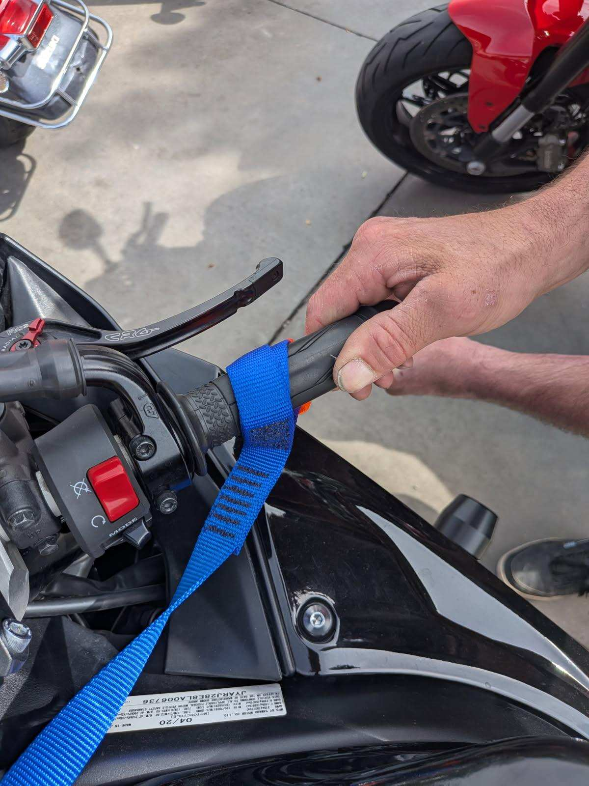
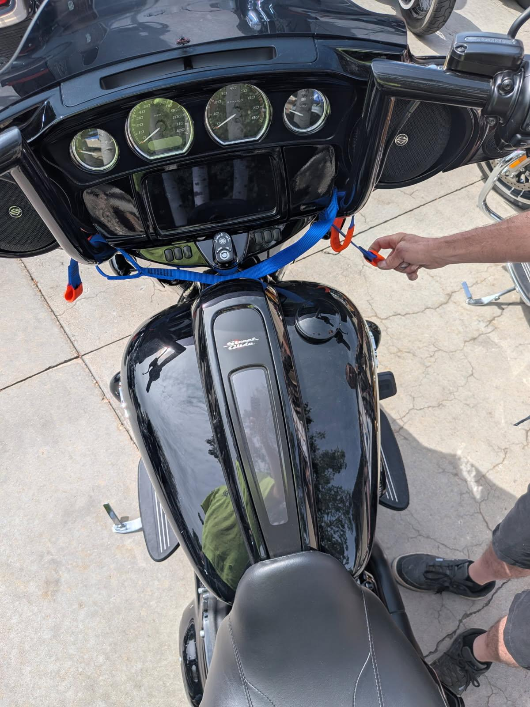
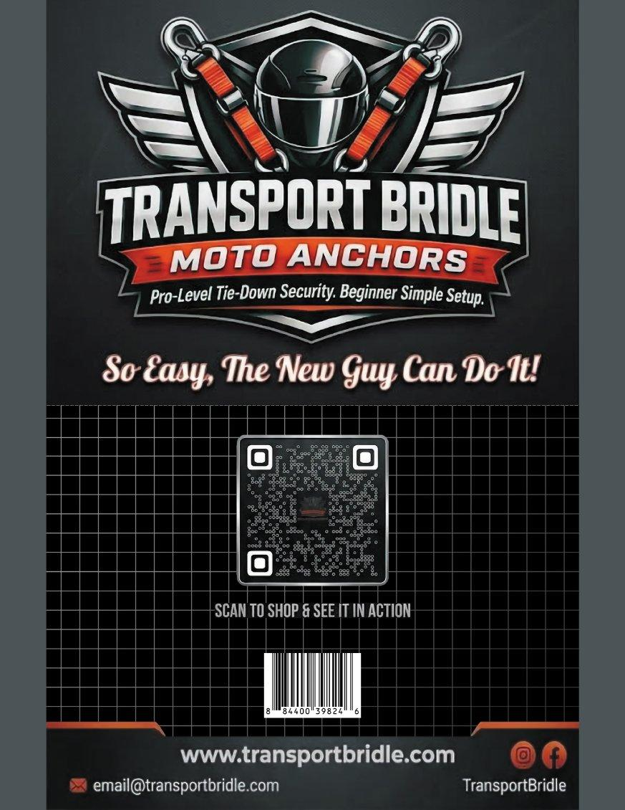

Choose the setup that matches your motorcycle.

See the standard setup and grip-area examples.

Check handlebar rise before selecting the setup method.

Review the standard setup for compatible handlebar configurations.